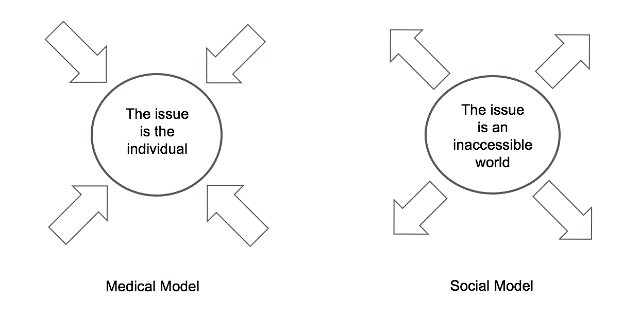

Medical and Social Models of Disability
Of many frameworks that attempt to provide perspective and clarity to disability issues, perhaps the two most prominent are the “medical” and “social” models of disability.

- Medical Model
- The medical model asserts that disability is primarily the result of an individual’s impairments. In this model, disability is seen as a shortcoming, linked to the individual that requires correction or accommodation. In order to participate in school, employment, and other social institutions, an individual must seek assistance.
- Social Model
- By contrast, the social model asserts that society creates barriers that disable people; that disability is the result of social systems and environments that fail to take into account the full range of human capability. In this model, it is the systems that must be reimagined and adapted so that they are accessible and useable to people across a spectrum of ability levels.